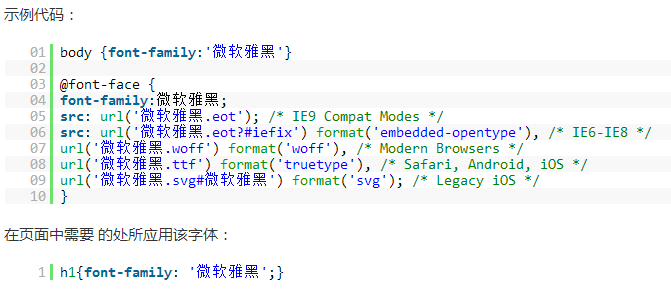

CSS3字体(@font-face)、文本效果
@font-face是CSS3中的一个模块，他主要是把自己定义的Web字体嵌入到你的网页中:
支持如下属性@font-face：
{
font-family：mupiao；设置文本的字体名称。
font-style：italic；设置文本样式。
font-variant：small-caps；设置文本是否大小写。
font-weight：bold；设置文本的粗细。
font-stretch：semi-condensed；设置文本是否横向的拉伸变形。
font-size：24px；设置文本字体大小。
src：url(fonts/xxxx.ttf),url()；设置自定义字体的相对路径或者绝对路径。
}

Web常见的字体格式:(5种)
一、TureTpe(.ttf)格式：
.ttf字体是Windows和Mac的最常见的字体，是一种RAW格式，因此他不为网站优化,支持这种字体的浏览器有【IE9+,Firefox3.5+,Chrome4+,Safari3+,Opera10+,iOS Mobile
Safari4.2+】；
二、OpenType(.otf)格式：
.otf字体被认为是一种原始的字体格式，其内置在TureType的基础上，所以也提供了更多的功能,支持这种字体的浏览器有 Firefox3.5+,Chrome4.0+,Safari3.1+,Opera10.0+,iOS
Mobile Safari4.2+】；
三、Web Open Font Format(.woff)格式：
.woff字体是Web字体中最佳格式，他是一个开放的TrueType/OpenType的压缩版本，同时也支持元数据包的分离,支持这种字体的浏览器有【IE9+,Firefox3.5+,Chrome6+,Safari3.6+,Opera11.1+】；
四、Embedded Open Type(.eot)格式：
.eot字体是IE专用字体，可以从TrueType创建此格式字体,支持这种字体的浏览器有【IE4+】；
五、SVG(.svg)格式：
.svg字体是基于SVG字体渲染的一种格式,支持这种字体的浏览器有【Chrome4+,Safari3.1+,Opera10.0+,iOS Mobile Safari3.2+】。